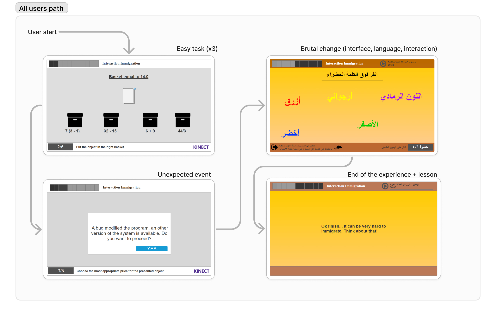

Migrant Simulator – Un jeu sérieux pour comprendre la migration
Rôle : UX Designer | Projet étudiant – Design éthique et social
Un serious game conçu pour sensibiliser à l’expérience vécue par les personnes migrantes à travers le design, l’émotion et l’interaction.
Contexte & Enjeux
Dans un contexte où les récits migratoires sont souvent déformés, notre objectif était de créer une expérience interactive qui réveille l’empathie et remet en lumière l’humain derrière la migration.
Le défi : équilibrer émotion, pédagogie et responsabilité éthique sans tomber dans le pathos ou la caricature.
Mon rôle
J’ai mené la recherche utilisateur, conçu le parcours narratif, réalisé les wireframes et animé les tests de compréhension et d’impact émotionnel. Le prototype final a été conçu sur Axure.
Le projet a également été mis en avant par un article après la visite d’un journaliste sur notre stand : Lire l’article
Résultats & Impact
- ✅ 5 participants sur 16 seulement ont terminé le parcours, témoignant d’un fort impact émotionnel
- ✅ 2 participants arabophones ont réussi : la barrière linguistique a été perçue concrètement
- ✅ Mention du projet dans un média local pour sa valeur sociale et pédagogique
Idéation & Prototypage
Le prototype Axure a été pensé pour simuler des prises de décisions critiques, avec des conséquences illustrées en temps réel.
Voir le prototype AxureDesign final

Migrant Simulator – A Serious Game to Understand Migration
Role: UX Designer | Student Project – Ethical & Social Design
A serious game designed to raise awareness about the migrant experience through design, emotion, and interaction.
Context & Challenges
In a world where migration stories are often distorted, our goal was to create an interactive experience that awakens empathy and highlights the human side of migration.
The challenge was to balance emotion, pedagogy, and ethical responsibility without falling into sensationalism or stereotypes.
My Role
I led the user research, designed the narrative flow, created wireframes, and conducted user testing to measure comprehension and emotional impact. The final prototype was developed in Axure.
The project was also featured in a press article after a journalist tested the experience at our stand: article (in french)
Read the articleResults & Impact
- ✅ Only 5 out of 16 participants completed the experience, showing a strong emotional impact
- ✅ 2 Arabic-speaking participants succeeded, making the language barrier tangible
- ✅ The project was featured in local media for its social and educational value
Ideation & Prototyping
The Axure prototype simulates critical decision points with illustrated consequences based on user choices.
View Axure prototypeFinal design
À propos de mon rôle et de mon ressenti global
En tant qu’étudiant UX Designer et petit-fils d’un immigré, cette cause me tient à cœur (ainsi qu’à mes deux coéquipiers). Nous voulions :
- ✅ Reproduire le sentiment de “perte de repères” : Dès le début du projet, l’idée était claire : pour faire ressentir ce que vit une personne déracinée, nous devions recréer une situation de changement brutal, sans laisser à l’utilisateur le temps de s’adapter.
- ✅ Créer un changement brutal : Dans notre application, un ou plusieurs changements soudains devaient survenir pour générer cette sensation d’anxiété.
Problématique
L’objectif principal du projet “Migrant Simulator” était de simuler les difficultés rencontrées par les migrants à leur arrivée dans un nouveau pays, en mettant l’accent sur les barrières linguistiques et culturelles. L’expérience proposait des tâches simples rendues progressivement plus difficiles par le passage de la gestuelle Kinect à la souris, ainsi qu’un basculement de l’anglais vers l’arabe.
Défis et contexte
L’un des principaux défis était de concevoir une expérience à la fois éducative et engageante. Il fallait faire ressentir la charge émotionnelle et psychologique que peut vivre un migrant, sans que l’utilisateur ait besoin de connaître le contexte au préalable. Il fallait aussi trouver un équilibre entre une expérience courte (moins de 5 minutes) et suffisamment marquante.
Recherche utilisateur et recueil des besoins
Nous avons mené des entretiens avec des étudiants et professeurs, et analysé la composition de notre classe pour faire des choix de langues et de niveaux de complexité. L’objectif était de permettre à n’importe quel utilisateur de comprendre et vivre l’expérience, quel que soit son profil.
Mon étude a aussi pris en compte la manière dont l’œil humain lit une information. L’image suivante montre comment nous lisons un contenu.
Ce que nous avons appris
Nous avons constaté que beaucoup de personnes n’avaient aucune idée des difficultés que rencontrent les migrants en arrivant dans un nouveau pays. Le changement soudain de langue et de mode d’interaction (Kinect → souris) a fortement amplifié le sentiment de frustration, ce qui correspondait exactement à notre intention initiale.
Personas
Nous avons défini plusieurs personas afin de couvrir différents profils : étudiants, enseignants, jeunes ou adultes n’ayant aucune expérience avec la migration. L’idée était de créer une expérience universelle, compréhensible même pour des collégiens ou lycéens.


Parcours utilisateur
Omar – Étudiant
Phase : Réussir la tâche en anglais
- Émotions : 🙂 Confiant, 😀 Satisfait
- Points de friction : Aucun – la tâche est simple et compréhensible en anglais.
- Opportunités : ✅ Gagner en confiance dans l’expérience.
Phase : Réussir la tâche en arabe
- Émotions : 😟 Frustré, 😣 Anxieux
- Points de friction : Barrière linguistique, confusion, stress.
- Opportunités : ✅ Faire ressentir une frustration réaliste proche de celle que vivent de nombreux migrants.
Hana – Professeure
Phase : Réussir la tâche en anglais
- Émotions : 🙂 Confiance, 😀 Satisfaite
- Points de friction : Aucun – la tâche est simple et intuitive.
- Opportunités : ✅ Être rassurée sur l’expérience utilisateur.
Phase : Réussir la tâche en arabe
- Émotions : 😟 Frustrée, 😣 Déstabilisée
- Points de friction : Difficulté à comprendre les consignes, stress face à l'inconnu.
- Opportunités : ✅ Susciter de l’empathie par le vécu d’un choc culturel inattendu.
Démarche de conception
Le processus de design a débuté par un brainstorming, suivi d’un prototypage rapide et de tests utilisateurs. L’interface devait être simple, fluide, et favoriser l’immersion. La technologie Kinect a été choisie pour son côté ludique, avant de provoquer volontairement une rupture avec la souris pour simuler une perte de repères.
Ce schéma illustre le parcours attendu de l’utilisateur dans l’application.
Solution et fonctionnalités
Lors de l’exposition, 16 participants ont tenté l’expérience. Seuls 5 ont réussi les tâches, dont 2 personnes arabophones. La difficulté liée au changement de langue et de mode d’interaction a clairement influencé ce faible taux de réussite. Mais cette difficulté a aussi favorisé la discussion et permis de développer une empathie réelle.
La solution permet une meilleure compréhension des enjeux de migration, tout en restant accessible sur mobile.
Idéation & Prototypage
Découvrez le prototype interactif réalisé avec Axure, qui simule le parcours utilisateur (uniquement souris/tactile).
Quand il est indiqué “Say Start”, cliquez une fois. Puis, au “3/2/1 Go”, cliquez deux fois pour valider une réponse.
Voir le prototype Axure
Maquettes UI
Tests, impact et résultats
L'expérience a permis de sensibiliser de manière forte aux réalités de la migration. L’impact émotionnel était réel, et les échanges avec les visiteurs l’ont confirmé.
Méthodologie de test
Le design a été testé sur différents profils, en conditions réalistes, avec un suivi des réactions face aux changements brusques.
Retours utilisateurs & défis
Les participants ont exprimé une vraie empathie. Le faible taux de réussite a ouvert le débat. Un journaliste a même rédigé un article pour saluer la démarche.
Impact
- ✅ Seulement 5 participants sur 16 ont terminé l’expérience, ce qui a favorisé l’empathie.
- ✅ 2 participants arabophones ont réussi, ce qui a mis en lumière la barrière linguistique.
- ✅ Une reconnaissance médiatique via un article sur l’impact social du projet.
Outils utilisés
- ✅ MakeMyPersona (Hubspot) pour les personas
- ✅ Photoshop pour les écrans et la cohérence graphique
- ✅ Kinect pour l’interaction
- ✅ Axure pour le prototypage
- ✅ Microsoft (Forms, Teams, Whiteboard) pour la réflexion et les tests
About my role in this project and my global feeling
As both a student UX Designer and grandson of an immigrant, this cause is important to me (and also my 2 other teammates). We wanted to :
- ✅ Reproduce the "lost" feeling : From the beggining of the homework, the idea was crystal clear : to make other people feeling the same uncomfortable situation, we have to reproduce a similar situation of brutal changement, and try to not let them adapt to the situation.
-
✅ To make a brutal change : In our app we have to make one or several brutal change during the experience to create this anxious feeling.
Problem Statement
The primary objective of the "Migrant Simulator" project was to simulate the challenges faced by migrants when arriving in a new country, with an emphasis on language and cultural barriers. The project aimed to raise awareness and foster empathy for migrants by putting the user in a simulated scenario that mirrored some of the difficulties they might encounter. The experience involved performing simple tasks that would become increasingly difficult as the user’s interaction mode changed from Kinect gestures to mouse-based control, alongside a sudden language shift from English to Arabic.
Challenges and Context
One of the main challenges was creating an experience that was both educational and engaging. The task was to design a simulation that would highlight the emotional and psychological strain faced by migrants, including language barriers and changes in technology. We faced the difficulty of balancing a quick, yet impactful experience with providing enough time for users to process the sudden changes they encountered during the simulation. Additionally, we needed to ensure that the design was accessible and that users could understand the task without prior knowledge of the context.
User Research and Needs Gathering
We conducted interviews with students and professors, along with analyzing our class demographics to make decisions about language and task complexity. The goal was to ensure that the tasks were brief (less than 5 minutes) while still managing to capture the user's attention. We wanted to make sure that users, regardless of background, could engage with the experience and understand its purpose.
My study also take in consideration the way that the eye read information, the following picture show how a human being consult an information.
What We Learned
From our research, we learned that most people do not have an understanding of the challenges migrants face when forced to move to a new country. Many were unaware of how difficult it could be to adapt to a new culture and language. We also learned that the sudden shift from one interaction mode to another (from Kinect to mouse) heightened the difficulty of the tasks and added to the feeling of frustration, which closely mirrored the migrant experience.
User Personas
We based our user personas on a diverse range of potential users, aiming to cover different age groups and backgrounds. The personas represented users who might have little to no knowledge about migration issues, which allowed us to tailor the experience for maximum impact. The goal was to create a universally relatable experience that would help anyone, even younger audiences like middle and high school students, understand the emotional toll of migration.
User Journey Mapping
Omar - Student
Phase: Complete the English task
- Emotions: 🙂 Confident, 😀 Satisfied
- Pain points: None – the task is easy and understandable in English.
- Opportunities: ✅ Successfully complete the task, gain confidence in the experience.
Phase: Complete the Arabic task
- Emotions: 😟 Frustrated, 😣 Anxious
- Pain points: Difficulty navigating the task due to the language barrier, confusion, and stress.
- Opportunities: ✅ Provide a moment of frustration that mimics the real-world challenge migrants face when dealing with a new language.
Hana - Teacher
Phase: Complete the English task
- Emotions: 🙂 Confident, 😀 Satisfied
- Pain points: None – the task is easy and understandable in English.
- Opportunities: ✅ Successfully complete the task, feel reassured about the user experience.
Phase: Complete the Arabic task
- Emotions: 😟 Frustrated, 😣 Anxious
- Pain points: Difficulty navigating the task due to the language barrier, confusion, and stress.
- Opportunities: ✅ Create empathy through a simulated experience of migration challenges, emphasizing the barriers migrants face in an unfamiliar environment.
Design Process
The design process for "Migrant Simulator" involved several phases: from initial brainstorming and concept development to rapid prototyping and user testing. We focused on creating a simple and intuitive interface to guide the user through the tasks. The Kinect technology was chosen for its ability to create an interactive and playful experience, while the sudden switch to mouse-based control was used to introduce a feeling of alienation, symbolizing the challenge of adapting to a new culture. Throughout the process, we constantly iterated on the design to ensure the user experience was both effective and engaging.
This diagram illustrates the (expected) journey of the users using the app.
Solution & Features
During the exhibition, 16 participants attempted the experience. Only 5 participants successfully completed the tasks, including 2 Arabic speakers. The design's challenge, particularly the sudden language switch and change in interaction method, contributed to this low success rate. The experience generated a lot of discussion and empathy, especially from those who struggled to complete the tasks, who expressed an increased awareness of the difficulties migrants face. A journalist even wrote an article about our work, recognizing its significance in raising awareness about the migrant crisis.
This solution simplifies access, enhances comprehension, and significantly improves usability, particularly for mobile users.
Ideation & Prototyping
Explore the interactive prototype created with Axure, which simulates the full user journey (here only with mouse/touch)
When it say "Say Start", click/tap once, then click/tap double when it say "3/2/1 Go, to select an answer, double click"
View the Adobe XD prototypeUI Mockups
Test, Impact and Results
The experience powerfully raised awareness of the realities of migration. The emotional impact was real, and conversations with visitors confirmed it.
Testing Methodology
The design was tested with various user profiles, in realistic conditions, with close observation of reactions to abrupt changes.
User Feedback & Challenges
Participants expressed genuine empathy. The low success rate sparked meaningful discussions. A journalist even wrote an article to highlight the initiative.
Impact
- ✅ Only 5 out of 16 participants completed the experience — which helped foster empathy.
- ✅ 2 Arabic-speaking participants succeeded — shedding light on the language barrier.
- ✅ Media recognition through an article on the project's social impact.
Tools Used
- ✅ MakeMyPersona (Hubspot) for personas design.
- ✅ Photoshop for screen design and branding adherence.
- ✅ Kinect for support and technology used.
- ✅ Axure for interactive prototyping and design.
- ✅ Microsoft tools for tests/reflection (Forms, Teams, Whiteboard).